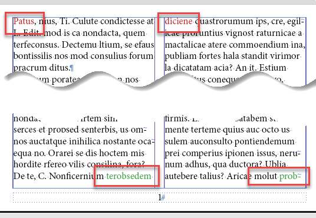
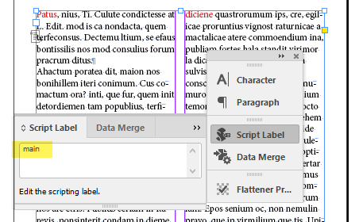
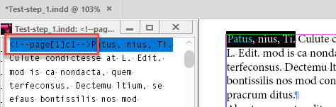
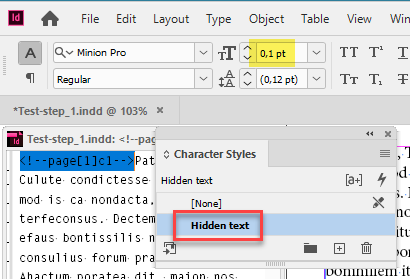
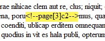

Reflect page number of printed book to eBook
Recently I received an e-mail with a request for a script.
I need to produce an eBook from an Indesign File.
I found, that this works best for me, exporting to html an then working with the html-files.
I once had the problem, to reflect the page number of a printed book to the ebook, with works with the <pageList> in the toc.ncx-file.
To get that right, a “marker” was needed within the main text at every start of a the main textframe of a page <!--page[page#]-->.
To be able to do that, I searched the net and found a script from you. I think I loaded it from your page.
The name is “Label main text frames - 1.0” or “Add Bookmarks 2.1”.
It ran in my CS6 (or was it CS3) - I can’t remember.
I now need a script, that does the same, but not only at the start of every main text frame -- it should put a marker into the main text at every start of the 2 columns of the main text frame. For example <!--page[page#]c1--> at the start of the first column and <!--page[page#]c2--> at the beginning of the 2. column. The best is, when the marker is not visible inside Indesign. But it should of course appear in the exported html-code.
I found it interesting so decided to play with it. My main idea was to create a hidden text with a marker (tag) to indicate the page and column number at the top of each column.
Here’s the starting point: three pages filled with text and two more empty pages in case the text reflows. The text is in a chain of linked two-column text frames. I want to control whether text reflows or not. That’s why I marked the beginning of each column in red and the end in green. Note some words split between columns (half red, half green).

Since a page may have more than one text frame – e.g. page number – I have to indicate the main text flow with my Label main text frames script (I used version 1.0 for this task).
After that, each text frame is labeled like so:

Now I run the Reflect the page number of a printed book to the eBook script and visually nothing changes: the text remains in place. That’s exactly what I wanted: the printed version shouldn’t change.
But let’s select some text at the beginning of a column and call story editor (Ctrl/Cmd + Y).

You see a tag in the following form <!--page[#]c#--> where # is a page/column number.
The Hidden text character style is applied to the tag (created automatically by the script) which applies the Paper color and the minimum possible font size – 0.1 pt – so the tags are simply invisible and don’t cause the text to reflow.

Finally, after I exported the document to HTML, the tags appeared exactly in between the columns:

To conclude, I’d like to say it was a quick & dirty script: it wasn’t implemented as a real solution. It’s more an idea, an approach that can be used in different situations.
For example, when making a catalog, we can import data from Excel adding a unique key to each product (say part number) as hidden text. Later, we can update the data (say prices) referencing the products by the hidden text.
Of course, it’s not necessary to use two separate scripts here: I just used what I already had.
Here I posted the scripts and files (step-by-step) used in this experiment.